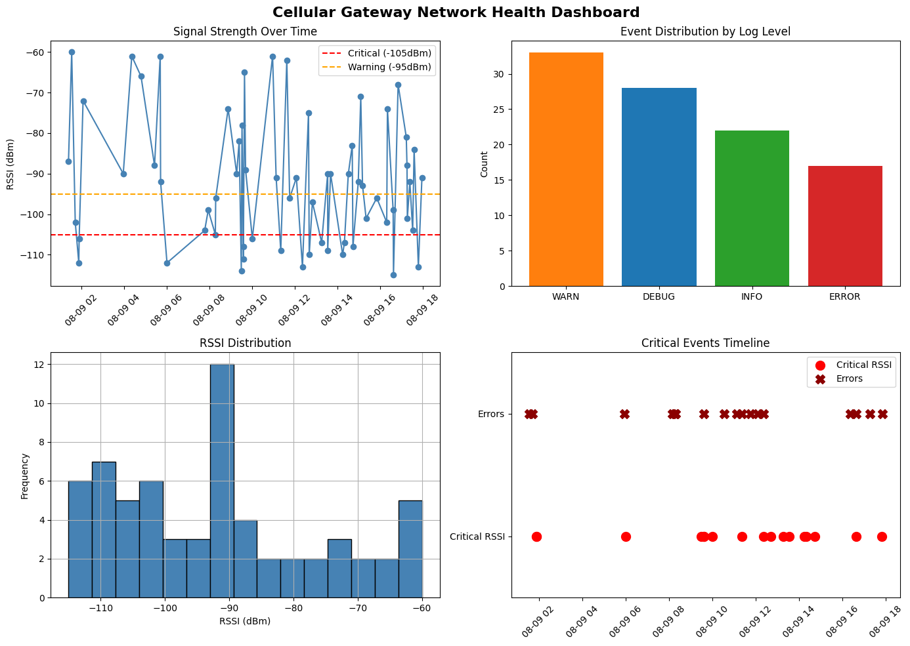

Cellular Gateway Telemetry & Log Analytics Pipeline
ETL pipeline · personal project
- Regex-based ETL turns unstructured "dirty" gateway logs into standardized, ISO-timestamped records.
- Automated RSSI threshold alerting (−95/−105 dBm) and statistical anomaly flags.
- 4-panel Matplotlib/Seaborn dashboard tracking signal strength, errors, and uptime.
PythonPandasRegexMatplotlibSeaborn